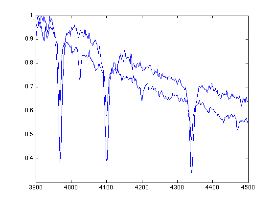

Overplotting
Contents
The easist way to see if two spectra are the same type is to overplot them on the same figure. Remind yourself about how these following commands work:
unkn = load( ... ); stdd = load( ... ); figure(1); clf; plot(stdd(:,1), stdd(:,2))
To overplot the unknown spectrum on the standard spectrum, remember to use
hold on;
so the next plot command won't clean up the previous plot command. Then you can compare the two spectra:
plot( ... )
Graph Legend
When there are more than one line, you'll need to include graph legend for lines to remind yourself which one represents what data set. The syntax is simple:
legend('standard', 'unknown', 'Location', 'NorthEastOutside');
Note that we wrote standard first because we plotted stdd first. The last parameter ('Location') gives the specified location of the legend box ('NorthEastOutside') with respect to the axes. You can type
help legend
LEGEND Display legend. ... ...
in the Command Window to see more options.
Line Specification
To make the overplotted figure easier to read, you may want to change the line specification, e.g. line style, color, and line width. Here are some examples:
1) Change the line style
figure(1); clf; hold on; plot(stdd(:,1), stdd(:,2)) plot( ... , '--') legend('standard', 'unknown', 'Location', 'NorthEastOutside');
2) Change the color:
figure(1); clf; hold on; plot(stdd(:,1), stdd(:,2), 'k') plot( ... , 'c') legend('standard', 'unknown', 'Location', 'NorthEastOutside');
3) Change the line width:
figure(1); clf; hold on; plot(stdd(:,1), stdd(:,2), 'LineWidth', 2) plot( ... ) legend('standard', 'unknown', 'Location', 'NorthEastOutside');
You can type
help plot
PLOT Linear plot. ... ...
in the Command Window to find more options. Note that the default value is blue solid line ('b-')